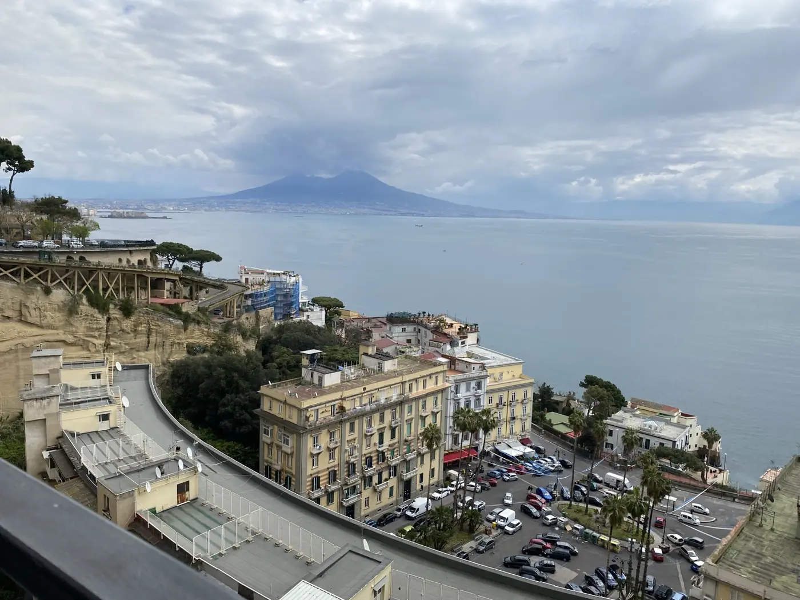

Home
About
Notes
Things I Like
Contact
IT
|
EN
Home
About
Notes
Things I Like
Contact
TRAVEL
My World
Places I’ve been, moments I’ve lived, and many more to explore.
102
cities
43
countries
5
continents
Some destinations
More to come →
Tokyo
Japan
Los Angeles
USA
Bali
Indonesia
Maldives
Maldives
Roma
Italy

Napoli
Italy
New York
USA
Barcelona
Spain